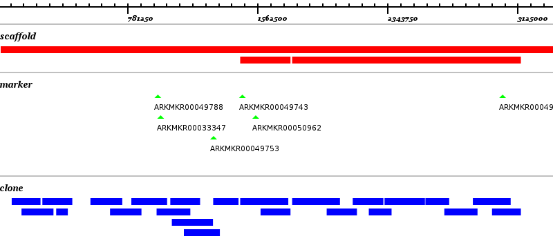
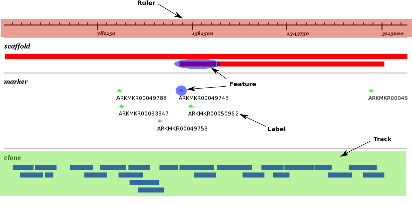
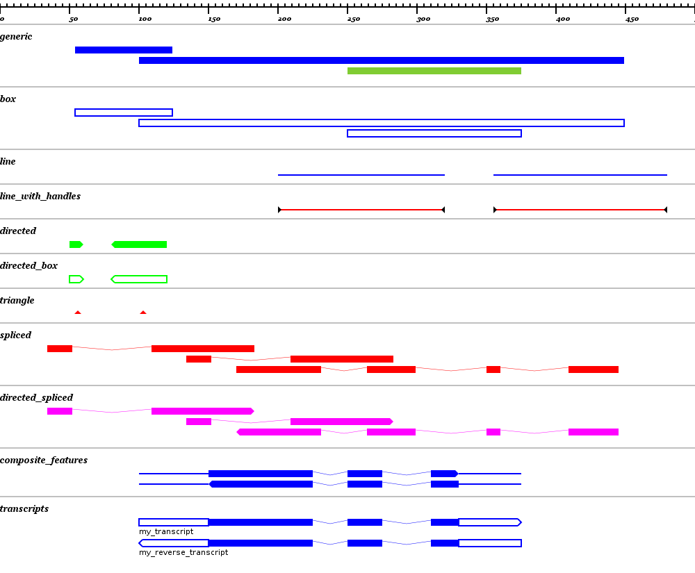

Bio::Graphics tutorial
Copyright (C) 2007, 2008 Jan Aerts <jan.aerts@bbsrc.ac.uk>
License: The Ruby License
Homepage: bio-graphics.rubyforge.org
(If you‘d like to know how the code itself works, please see the README.DEV)
Overview and terms used
This Bio::Graphics library allows for drawing overviews of genomic regions, similar to the pictures drawn by gbrowse. Basically, it allows creating simple images that display features on a linear map, including the position of subdomains in a protein (see picture). It‘s now also possible to create vertical pictures.


Any Bio::Graphics image consists of the following parts (concepts and nomenclature identical to that from bioperl):
- one panel: container of all tracks
- one or more tracks: container of the features. Multiple tracks can exist in the same graphic to allow for differential visualization of different feature types (e.g. genes as blue rectangles and polymorphisms as red triangles)
- one or more features in each track: these are the actual features that you want to display (e.g. ‘gene 1’, ‘SNP 123445’)
- a ruler on top of the panel: is added automatically
Schematically:
panel +-> track 1 | +-> feature 1 | +-> feature 2 | +-> feature 3 +-> track 2 | +-> feature 4 | +-> feature 5 +-> ruler
Below is an annotated version of the picture at the top of the page. The whole picture makes up the panel, which contains one ruler and 3 tracks (‘scaffolds’, ‘markers’ and ‘clones’). Each of these tracks has zero or more features.

As a feature can only exist within the confines of a track and a track can only exist within the confines of a panel, these classes are encapsulated. This means that the Track class is not Bio::Graphics::Track, but Bio::Graphics::Panel::Track; the same goes for Bio::Graphics::Panel::Track::Feature.
Glyphs
According to Wikipedia, a glyph is "the shape given in a particular typeface to a specific grapheme or symbol". In the context of Bio::Graphics, a glyph is just the thing that represents one single feature. Several kinds of glyph exist to allow for features that are on a particular strand as well as for spliced features. See the picture below for an overview.

If the view is really zoomed out, arrow on the directed glyphs are not shown, as they would be bigger than the glyph itself.
Use
The code below was used to create the picture showing all the different glyphs mentioned above. This is not the nicest piece of code, but it is the simplest. It is straightforward to parse a GFF file and create a picture based on that. See my blog for an nicer example.
For an explanation of the arguments with each method for this example, see the Bio::Graphics::Panel and Bio::Graphics::Panel::Track object documentation.
1 # Load the library
2 require 'bio-graphics' # or require_gem 'bio-graphics' or gem 'bio-graphics'
3
4 # Create the panel
5 my_panel = Bio::Graphics::Panel.new(500, :width => 1000)
6
7 # Create the tracks
8 generic_track = my_panel.add_track('generic', :label => false)
9 line_track = my_panel.add_track('line', :label => false, :glyph => :line, :colour => [0,0,1])
10 line_with_handles_track = my_panel.add_track('line_with_handles', :label => false, :glyph => :line_with_handles, [1,0,0])
11 directed_track = my_panel.add_track('directed', :label => false, :glyph => :directed_generic, :colour => [0,1,0])
12 triangle_track = my_panel.add_track('triangle', :label => false, :glyph => :triangle, :colour => [1,0,0])
13 spliced_track = my_panel.add_track('spliced', :label => false, :glyph => :spliced, :colour => [1,0,0])
14 directed_spliced_track = my_panel.add_track('directed_spliced', :label => false, :glyph => :directed_spliced, :colour => [1,0,1])
15 composite_track = my_panel.add_track('composite_features', :label => false, :glyph => { 'utr' => :line, 'cds' => :directed_spliced})
16
17 # Add features to each track
18 generic_track.add_feature(Bio::Feature.new('clone', '250..375'), :link => 'http://www.newsforge.com')
19 generic_track.add_feature(Bio::Feature.new('clone', '54..124'), :link => 'http://www.thearkdb.org')
20 generic_track.add_feature(Bio::Feature.new('clone', '100..449'), :link => 'http://www.google.com')
21
22 line_track.add_feature(Bio::Feature.new('utr', 'complement(200..320)'))
23 line_track.add_feature(Bio::Feature.new('utr', '355..480'), :link => 'http://www.zdnet.co.uk')
24
25 line_with_handles_track.add_feature(Bio::Feature.new('utr', 'complement(200..320)'))
26 line_with_handles_track.add_feature(Bio::Feature.new('utr', '355..480'), :link => 'http://www.zdnet.co.uk')
27
28 directed_track.add_feature(Bio::Feature.new('primer', '50..60'), :link => 'http://www.google.com')
29 directed_track.add_feature(Bio::Feature.new('primer', 'complement(80..120)'), :link => 'http://www.sourceforge.net')
30
31 triangle_track.add_feature(Bio::Feature.new('snp', '56'))
32 triangle_track.add_feature(Bio::Feature.new('snp', '103'), :link => 'http://digg.com')
33
34 spliced_track.add_feature(Bio::Feature.new('spliced', 'join(34..52,109..183)'), :link => 'http://news.bbc.co.uk')
35 spliced_track.add_feature(Bio::Feature.new('spliced', 'complement(join(170..231,264..299,350..360,409..445))'))
36 spliced_track.add_feature(Bio::Feature.new('spliced', 'join(134..152,209..283)'))
37
38 directed_spliced_track.add_feature(Bio::Feature.new('cds', 'join(34..52,109..183)'), :link => 'http://www.vrtnieuws.net')
39 directed_spliced_track.add_feature(Bio::Feature.new('cds', 'complement(join(170..231,264..299,350..360,409..445))'), :link => 'http://bioinformatics.roslin.ac.uk')
40 directed_spliced_track.add_feature(Bio::Feature.new('cds', 'join(134..152,209..283)'))
41
42 utr5 = Bio::Feature.new('utr', '100..150')
43 cds = Bio::Feature.new('cds', 'join(150..225, 250..275, 310..330)')
44 utr3 = Bio::Feature.new('utr', '330..375')
45
46 transcript = Bio::Feature.new('transcript', 'join(100..150, 150..225, 250..275, 310..330, 330..375)', [], nil, [utr5,cds,utr3])
47 composite_track.add_feature(transcript, :label => 'my_transcript')
48
49 # Draw the thing
50 my_panel.draw('glyph_showcase.png')
Let‘s walk through this:
- Line 2: load the actual library code. Make sure that the library is in your RUBYLIB path.
- Line 5: Create the panel, which is nothing more than the canvas
you‘ll be working on. The following parameters were used:
- The sequence is 500 bp long.
- The width of the picture will be 1000 points.
- Lines 8-15: Create the different tracks. Parameters are:
- name.
- flag if feature labels should be drawn (here: false)
- the default glyph for features in this track. This can be overridden on a feature-by-feature basis. See the picture above and Bio::Graphics::Panel::Track#new for allowed values.
- the default colour for features in this track. This can also be overridden on a feature-by-feature basis. At the moment in RGB. (This will probably change to colour names in the future).
- Lines 18-47: Add features to each track. Parameters are:
- a Bio::Feature object. (See bioruby documentation at www.bioruby.org)
- the label to be used
- link.
- Line 50: Create the actual picture. If the the initial Panel#new call contains the parameter ":clickable => true" (in line 5), a HTML file is created as well.
That‘s pretty clear, but what‘s happening with the composite_track (on lines 15 and 42-47)?
To set the glyph for a feature (or the default glyph in a track), you normally use a symbol, like :generic or :directed_spliced. For composite features, however, we‘ve made it possible to have different subfeatures drawn in different ways. In this example: we want to draw the UTRs as thin lines, while the CDS is big boxes connected with thin lines. How does this work? See lines 42 to 47. If the feature you‘re adding to a track has subfeatures, you can use the type of the subfeature to direct the glyph to use. In the example above: the utr5 and utr3 have ‘utr’ as the first argument in the Bio::Feature#new, and the cds object has ‘cds’. The transcript that gets created in line 46 takes these three Bio::Feature objects as subfeatures (the last argument). Now up in line 15 we set the glyph of this track to the hash {‘utr’ => :line, ‘cds’ => :directed_spliced}. What this does, is it takes each subfeature in turn, and draws it using the glyph that matches its type.
Hyperlinks
There are no graphic formats that are inherently clickable (SVG is a special case and the display of it is not the SVG itself). Therefore, in case the user wants a clickable graphic, an accompanying HTML file is created with the same name as the picture but obviously the .html extension. This file contains the map and will display a clickable picture when loaded in a webbrowser.
Custom glyphs
The user can easily create custom glyphs to add to the functionality of the Bio::Graphics library. The only thing that has to be done is add a file to lib/bio/graphics/glyphs. The file should look like this:
module Bio::Graphics::Glyph
class Bio::Graphics::Glyph::SomeName < Bio::Graphics::Glyph::Common
def draw
@feature_context.rectangle(x1, y1, x2, y2).fill
end
end
end
What are the properties of that file?
- It‘s name has to be the same as the class name specified on the second line, but in snake_case instead of CamelCase. The above file therefore should be called some_name.rb.
- Give the class a sensible name (in CamelCase).
- Just define the draw method. Have a look at the other files in the glyphs/
directory for examples. Some values you can use:
- Bio::Graphics::FEATURE_HEIGHT = default height in pixels for a glyph
- Bio::Graphics::FEATURE_ARROW_LENGTH = default width in pixels of arrows on features
Download and installation
Development of the library is at rubyforge.org/projects/bio-graphics/
There are different ways to install the library.
- The easy way: gem install bio-graphics
- The hard (but cutting-edge) way: from SVN: svn checkout svn://rubyforge.org/var/svn/bio-graphics
Prerequisites
You‘ll need to have the following installed to use this library:
- bioruby (www.bioruby.org), to parse the feature locations.
- cairo (cairographics.org), to do the actual drawing.
- pango (www.pango.org), to do the high level text drawing.
Ubuntu
- gem install bio
- sudo apt-get install libcairo-ruby
Windows (thanks to Naohisa Goto)
Install Ruby-GNOME2 Win32 GUI Installer, which contains rcairo-1.2.6. Get it from ruby-gnome2.sourceforge.jp/?News_20070212_1 (ruby-gnome2-0.16.0-1-i386-mswin32.exe)
During installation, check the "Register enviroment variables" option.
Mac OSX (thanks to Ed Allen)
We haven‘t figured out yet how to install cairo and pango separately on a Mac. However, if you install Why The Lucky Stiff‘s Shoes GUI for Ruby toolkit, you get the pango and ruby-pango bindings for free. Get it from code.whytheluckystiff.net/shoes/wiki/DownloadShoes